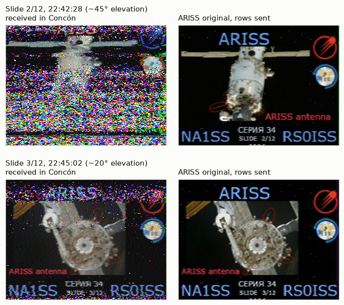
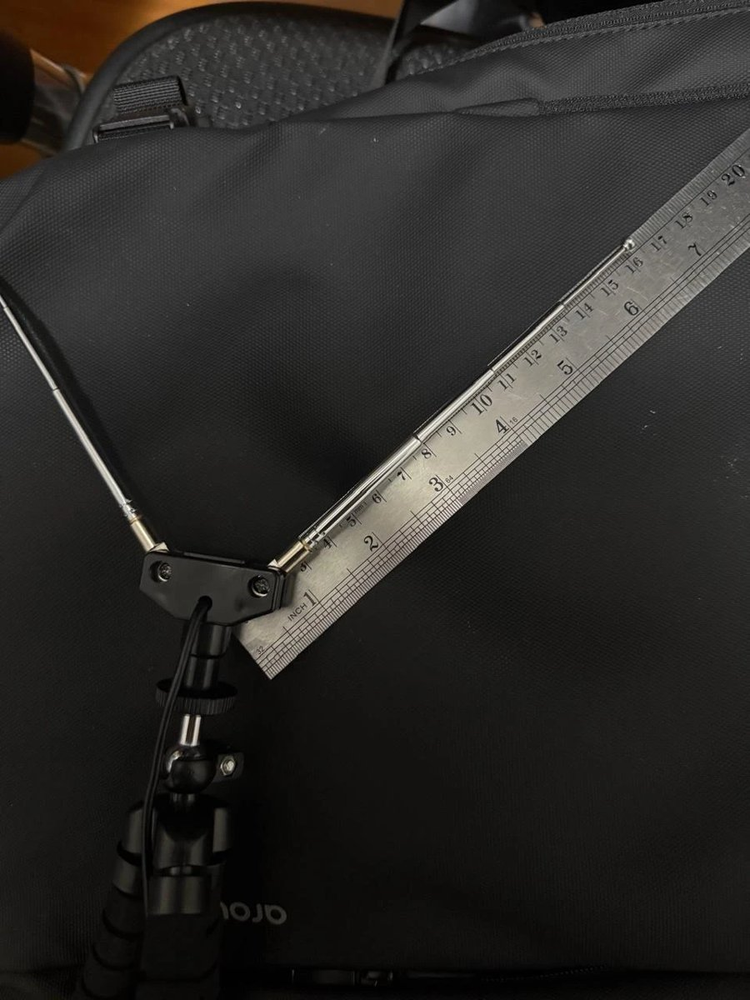
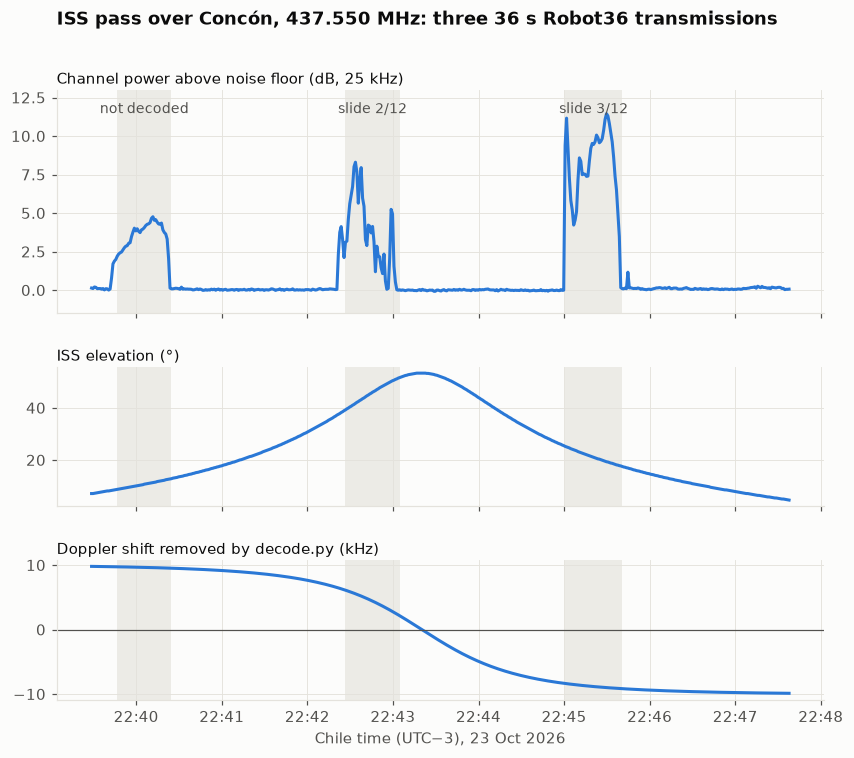

7. Receiving SSTV images from the ISS (ARISS Series 34)
Log for 2026-10-23. ARISS ran an SSTV event from the International Space Station: 12 slides about ARISS hardware, sent in Robot36 on 437.550 MHz FM. I wrote a small Python toolchain to predict the passes, record raw IQ, remove the Doppler shift and decode the images. I took it to the Concón dunes for the 22:40 pass. Two of the three transmissions in that pass came out as images: slide 3/12 clearly and slide 2/12 only in its top third. I submitted both to the ARISS gallery and requested the event certificate as a shortwave listener (SWL). A few hours later, slide 3/12 was accepted into the public ARISS SSTV archive.

The event
| Event | ARISS SSTV Series 34, "ARISS Hardware" (Expedition 75) |
| Window | Thu 22 Oct 15:30 UTC to Sun 25 Oct 18:00 UTC |
| Downlink | 437.550 MHz FM, callsigns RS0ISS / NA1SS |
| Mode | Robot36: 320×240, colour, 36 s per image |
| Cycle | 36 s on, about 2 min off |
Two numbers shaped the whole design:
- Doppler of ±10 kHz. The ISS moves at about 7.7 km/s. At 437.55 MHz that shifts the carrier by up to ±10 kHz, three times more than on the older 145.800 MHz SSTV events. A 25 kHz FM channel that doesn't follow the satellite clips part of the signal near the start and the end of the pass.
- About 6 minutes per pass. With an image every ~2.5 min, a good pass gives 2–3 images. Missing one costs a lot.
Hardware
RTL-SDR Blog V4L → short coax → dipole, nothing else: no LNA and no filter. The LNA from guide 6 is a 137 MHz filter module, so it is of no use at 437 MHz.

At 437.55 MHz a quarter wavelength is 171 mm. Shortened by the usual ~5% for the thickness of the elements, that gives 163 mm per arm, measured from the edge of the mount to the tip. For satellites the arms should open to about 120° and the whole V should lie horizontal. As I found out later, that detail matters.
Software
Everything is in iss_sstv/, separate from the other tools, with its own virtual environment created
with the Windows py launcher. I run it from Ubuntu (WSL) through small bash wrappers. Those wrappers
call the Windows Python of the venv, so the dongle stays on Windows with the WinUSB driver and no
USB passthrough to WSL is needed.
| Script | What it does |
|---|---|
passes.py |
Downloads the ISS TLE from CelesTrak and lists the passes above 10° for the next 48 h in Chile time, flagging the ones before the end of the event |
record.py |
Records raw IQ (.cu8) at 1.024 MSps centred on 437.550 MHz, from 1 min before AOS to 1 min after LOS, plus a JSON with the UTC start time, rate, frequency, gain and TLE. It waits for the pass with a countdown |
decode.py |
Removes the Doppler shift, demodulates FM, writes a 48 kSps WAV and decodes every Robot36 image to ISS_YYYYMMDD_HHMMSSZ.png |
auto.py |
Picks the next useful pass, then waits, records and decodes |
Two problems with the RTL-SDR library
- The RTL-SDR Blog
rtlsdr.dllis self-contained. It has libusb linked in, solibusb-1.0.dllis not needed. I found that by listing the DLLs the file imports. - Recent pyrtlsdr does not load it. pyrtlsdr 0.4 and 0.5 refuse to import with this DLL. They
require
rtlsdr_set_ditheringandrtlsdr_set_gpio_*, which come from another fork and are not in the RTL-SDR Blog build. I pinned pyrtlsdr 0.3.0 instead of switching to the osmocom DLL, which does not handle the V4 well. The code also checks at run time whichrtlsdr.dllWindows actually loaded.
Removing the Doppler shift
decode.py processes the recording in blocks of about one second:
IQ 1.024 MSps → remove DC → low-pass, ÷10 → 102.4 kSps → Doppler mixer → 25 kHz channel, ÷2 → 51.2 kSps
→ FM discriminator → 300–3000 Hz band-pass → 48 kSps WAV → VIS search → Robot36 → PNG
The Doppler curve comes from the TLE. Skyfield gives the range rate between the ISS and my location
every 0.5 s, and the shift is −f · range_rate / c. Each sample gets its own frequency by
interpolation. The mixer accumulates phase in float64 and carries it from one block to the next, so
there are no jumps at the block edges:
class Mezclador:
def __init__(self, fs):
self.fs = float(fs)
self.ciclos = 0.0 # accumulated phase, in cycles, modulo 1
def __call__(self, x, f):
f = np.broadcast_to(np.asarray(f, dtype=np.float64), (len(x),))
acum = np.empty(len(x)); acum[0] = 0.0
np.cumsum(f[:-1], out=acum[1:])
fase = self.ciclos + acum / self.fs
self.ciclos = float((fase[-1] + f[-1] / self.fs) % 1.0)
fase -= np.floor(fase)
return x * np.exp(-2j * np.pi * fase).astype(np.complex64)
The filters work the same way: each block is filtered together with the tail of the previous one, so the output is identical to filtering the whole recording at once.
Finding and decoding the images
- VIS header. Each SSTV image starts with a header: 300 ms at 1900 Hz, a 1200 Hz start bit, then 7
data bits and a parity bit, each 30 ms long. Robot36 is code 8.
decode.pytracks the tone frequency of the audio, finds every header and uses it to split the recording into images and to timestamp each one. - Lost headers. A weak signal can lose its header while the image itself is still readable. A second search looks for trains of 1200 Hz sync pulses spaced 150 ms apart, the line period of Robot36, in the parts of the recording with no header.
- Primary decoder. Each image's audio goes to the
sstvpackage, a wrapper around a Rust crate that handles Robot36. - Fallback decoder. If the package fails, a Robot36 decoder of my own takes over. It finds the 1200 Hz sync pulse of every line, fits a straight line through their positions to correct slant, and reads the brightness (88 ms per line) and the alternating R−Y / B−Y colour scans.
Testing before going out
I could not test the receiver against the ISS before the pass, so I built a synthetic pass:
- Images. Test images encoded in Robot36 with PySSTV, which shares no code with either decoder.
- Modulation. FM with ±4 kHz deviation, on the 36 s on / 2 min off cycle.
- Doppler. The real curve of the 22:40 pass, computed independently by differentiating the range
rather than with the range-rate formula that
decode.pyuses. - Channel. 1/r path loss and Gaussian noise.
Mean absolute error per pixel between decoded and original images (0–255):
| Recording | Image 1 (+9.5 kHz) | Image 2 (+1.7 kHz) | Image 3 (−9.2 kHz) | Residual after correction |
|---|---|---|---|---|
| cu8 1.024 MSps, C/N 25 dB | 6.3 | 5.4 | 6.4 | median 0.7 Hz, max 31 Hz |
| SDR++ WAV 250 kSps, centre 437.600 MHz, C/N 18 dB | 9.1 | 6.4 | 8.7 | median 1.1 Hz, max 28 Hz |
| cu8 without Doppler correction | 8.2 | 5.4 | 6.7 | up to 9.3 kHz |
Without the Doppler correction the images still came out, a little worse. At that C/N the correction
mostly buys margin. The test also showed the decoder reading SDR++ recordings correctly: SDR++ puts
local time in its file names, and the code converts it with America/Santiago.
The field night
The 22:40 pass was the best of the evening: AOS 22:39:59 in the southwest, maximum 53° at 22:43:20 in the southeast, LOS 22:46:38 in the east-northeast. I took the laptop to the Concón dunes for an open horizon. The commands for the night:
cd /mnt/c/Users/andre/apps/rtl-sdr_v4l/iss_sstv
./check.sh
./record.sh --hora 22:40 --decodificar
The recording started at 22:39:28, 30 s after the planned AOS − 1 min, but still before the ISS rose above 10°. It lasted 490 s: 1.00 GB at a measured 1.0236 MSps, with no USB losses. The decode ran right after, on the same laptop.

The three transmissions are easy to see in the channel power:
| Transmission | Elevation | Peak above noise | Median above noise | Result |
|---|---|---|---|---|
| 22:39:43 | 8–13° | 4.8 dB | 3.8 dB | no VIS found, no image |
| 22:42:21 | 38–51° | 8.3 dB | 4.1 dB | VIS lost, found by its sync pulses; slide 2/12, top third only |
| 22:45:00 | 18–25° | 11.4 dB | 8.6 dB | VIS found; slide 3/12 |
The fallback search earned its place: without it, slide 2 would not exist. Both images come from the
sstv package. Re-decoding the same recording with both decoders and comparing with the originals
(mean error, 0–255):
| Slide | sstv package |
My decoder | Syncs found by my decoder |
|---|---|---|---|
| 2/12 | 89.7 | 80.6 | 60 of 240 |
| 3/12 | 24.1 | 32.7 | 186 of 240 |
On the clean image the package wins clearly. On slide 2 both are mostly noise.
The Doppler correction did its job. The pass went from +9.79 kHz to −9.88 kHz, and while the ISS was transmitting the signal stayed within about 130–240 Hz of the channel centre. That residual has the same sign and a similar size in all three transmissions, including the first one, where the Doppler barely changes. A clock or orbit error would grow with the rate of change of the Doppler, so this looks like a fixed frequency offset instead: most likely the dongle's oscillator, at about 0.5 ppm.
Comparing with the originals
Later I got the original slides. Robot36 sends 240 lines, so I compared against the top 240 rows of each original.
Slide 3/12 has no shift and no slant. The geometry, line timing and colours are all right. What it does have is noise, concentrated at the edges:
| Rows | Mean error (0–255) |
|---|---|
| 0–59 | 36–41 |
| 60–209 | 14–19 |
| 210–239 | 35 |
That matches the power trace: the signal was weaker at the start and at the end of that transmission.
Slide 2/12 is mostly lost. Row by row correlation with the original:
| Rows | Correlation |
|---|---|
| 0–29 | 0.07 |
| 30–59 | 0.20 |
| 60–89 | 0.55 |
| 90–119 | 0.25 |
| 120–239 | about 0 |
The recovered part lines up with the moment the signal peaked at +8 dB. After that it dropped to about +3 dB, and FM below its threshold turns into noise.
The odd result is that slide 2, sent near the top of the pass at 38–51°, came in weaker than slide 3 at 18–25°. The ISS was closer then, so it should have been the strongest. A dipole standing upright has a null straight overhead, which would explain that pattern. In the next passes the V goes flat, facing the sky.
Sharing it
ARISS collects received images in its SSTV gallery, and
submitting one is how you request the event certificate. The form takes a name, a callsign (SWL for
listeners without a licence), the Maidenhead grid square (FF47fb for the Concón dunes), and the UTC
date and time of each image. The UTC date matters here: both images were received on the evening of
23 Oct in Chile, which was already 24 Oct in UTC. I sent both slides as separate submissions and
requested the certificate, which ARISS emails after the campaign.
Volunteers review each submission before it goes public. Slide 3/12 passed that review and now appears in the ARISS SSTV archive among the Series 34 images, listed as "Andres Alvear Cabezon, SWL, SouthAmerica, acquired 2026-10-24 01:45 UTC".
What I would change
- Mount the dipole flat, as a 120° V facing the sky. It is the cheapest fix, and it is aimed at the high part of the pass, which should be the strongest.
- Keep the coax short. At 437 MHz a 3 m run of thin RG174 coax loses about 2 dB. A USB extension that brings the dongle to the antenna costs nothing.
- Add a 70 cm LNA at the antenna. The signals were only 4–11 dB above the noise, which is right at the FM threshold. A few dB more would have cleaned up both images and probably recovered the first one.
- Start a little earlier. The first transmission came at 8–13° elevation. Arriving early and starting the recording on time costs nothing.
Small things that took time
- WSL and Ctrl+C. In WSL, Ctrl+C kills a Windows process outright: Python never sees a
KeyboardInterrupt.record.pytherefore stops cleanly withq+ Enter, and flushes the file and its JSON every 10 s so a killed recording is still usable. - Timestamps. Recording and decoding work in UTC throughout, and only the screen output is in Chile time. The PNG names are in UTC, so the 22:45 image is dated the next day.
- Working offline. The dunes have no internet. Before leaving,
prepare.shrefreshes the TLE, saves the pass table, checks the dongle, compares the PC clock with internet time (it was 50 ms off) and checks free disk. In the field the scripts fall back to the saved TLE.